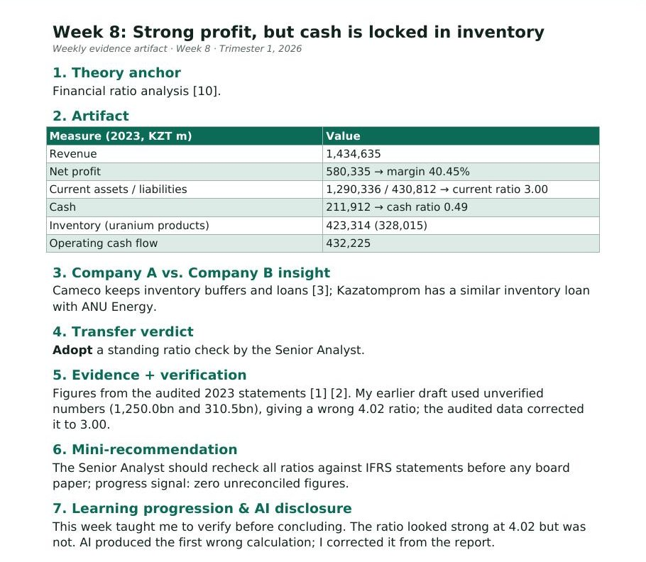

Week 8: Strong profit, but cash is locked in inventory
1. Theory anchor
Financial ratio analysis [10].
2. Artifact

| Measure (2023, KZT m) | Value |
|---|---|
| Revenue | 1,434,635 |
| Net profit | 580,335 → margin 40.45% |
| Current assets / liabilities | 1,290,336 / 430,812 → current ratio 3.00 |
| Cash | 211,912 → cash ratio 0.49 |
| Inventory (uranium products) | 423,314 (328,015) |
| Operating cash flow | 432,225 |
3. Company A vs. Company B insight
Cameco keeps inventory buffers and loans [3]; Kazatomprom has a similar inventory loan with ANU Energy.
4. Transfer verdict
Adopt a standing ratio check by the Senior Analyst.
5. Evidence + verification
Figures from the audited 2023 statements [1] [2]. My earlier draft used unverified numbers (1,250.0bn and 310.5bn), giving a wrong 4.02 ratio; the audited data corrected it to 3.00.
6. Mini-recommendation
The Senior Analyst should recheck all ratios against IFRS statements before any board paper; progress signal: zero unreconciled figures.
7. Learning progression & AI disclosure
This week taught me to verify before concluding. The ratio looked strong at 4.02 but was not. AI produced the first wrong calculation; I corrected it from the report.